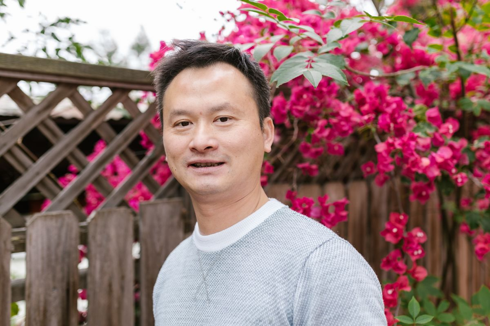

A severely compromised dentition
The teeth, supporting bone and overall bite have deteriorated to the point where rebuilding the entire arch may be more appropriate than treating individual teeth one by one.

Approach
Full arch
Assessment
3D CBCT
Planning
Digital